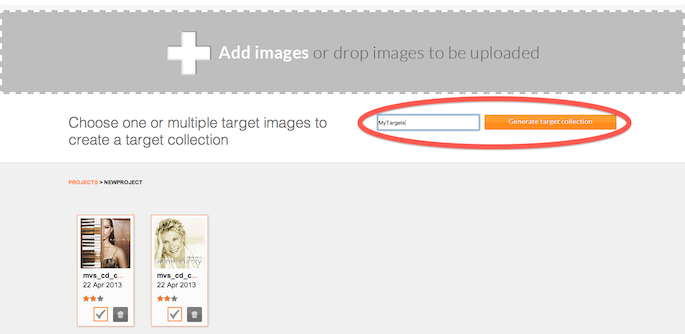

Target Management
This guide gives you an overview of how to create a target collection that you can use to detect and track images within your ARchitect World.
Add a new project
- Open http://developer.wikitude.com/tools/target-manager and login with your Wikitude Developer account
- Add a new project to your project collection

Add target images to your project
- Enter the newly created project
- Add new target images to the project either by clicking on Add images or drag & drop them on the gray area. Supported file formats include PNG and JPEG. If you are using PNG images, please make sure that it does not contain any transparent pixels, only solid colored images are supported.

- The file name will be set as the target name that will later be used to reference a particular target in your ARchitect World. If the target name is not completely visible, hover over it to reveal the full name.
- The target management tool will take a couple of seconds to calculate how suitable the provided target images are for detection and tracking purposes and generate a 3-star rating for each of them. Hover over the star rating to get additional information.
Star rating explained
- 0 stars: Not suitable for tracking. This target image cannot be tracked because it lacks textured features with high local contrast. Please consider choosing another target image.
- 1 star: Limited tracking ability. This target image provides basic tracking performance in good lightning conditions. Please consider improving the image
- 2 stars: Good tracking ability. This target image will track well in most conditions.
- 3 stars: Very good tracking ability. This target image will track very well in most conditions.
General advice for reference images
- Good image characteristics:
- Diversely textured image with high local contrast
- Bad image characteristics:
- Large areas with solid color or smooth color transitions
- Repetitive patterns
- Logos, signs
Create a target collection
- Select all desired targets you want to recognize/track, enter a name for the target collection and click on Generate target collection. Depending on the number of selected targets, it can take a moment to generate the target collection.

- After the target collection has been generated, it will be listed in the target collections page. Here you can review all target collections you've created. Use the provided download link to load the target collection directly from the Wikitude server or download it to package it together with your application for offline usage.

Use the target collection in your ARchitect World
Look at one of the image recognition examples or refer to the ARchitect API reference of AR.Tracker for instructions on how to use the created target collection for augmentations in your ARchitect Worlds.
Migrating your targets from previous versions
If you have been using a dataset from the Qualcomm Vuforia target management, please follow these steps to convert your ARchitect World to the new approach:
- Create a new project with the Wikitude target management tool and upload your targets (see instructions above)
- Create a target collection and store it in the same location as the previously used dataset
- In your ARchitect World, update the
AR.Trackerinitialization to point to the URL of your new target collection